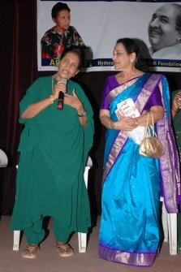
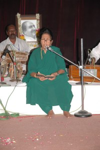
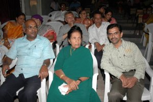

en evening with Mallika-e- Tarannum ” Mubarak Begum”
कुछ दिनों पहले मूर्ति साहब का मेल मिला कि 5 जुलाई को हैदराबाद में मुबारक बेगम आ रही हैं, क्या आप भी उन्हें सुनना चाहेंगे? साथ में जमुनाजी भी होंगी!
“नेकी और पूछ पूछ” मूर्ति साहब, मुबारक बेगम को कौन पगला नहीं सुनना चाहेगा? और फिर राजेन्द्र कुमार ( Rajendra Kumar) के साथ पर्दे पर मुबारक बेगम का सुप्रसिद्ध गीत “मुझको अपने गले लगालो ए मेरे हमराही.. (Hamrahi) गाने वाली अभिनेत्री जमुना जी को देखने- मिलने का सौभाग्य भी मिलेगा। ( जमुना जी ( jamuna) कई तेलुगु फिल्मों के अलावा सुनील दत्त- नूतन अभिनित मिलन में भी महत्वपूर्ण भूमिका निभाई थी)
ज्यों ज्यों पाँच तारीख आने लगी जा पाना और भी मुश्किल लगने लगा। एक तो शाम को ६ बजे कॉफे में ग्राहकी का समय और उसी समय मुबारक बेगम को सुनना!
आखिरकार हमारी बेगम साहिबा ने कहा आप जाकर आईये कॉफे मैं और हर्ष संभाल लेंगे।
आखिरकार अतिउत्साह में मैं 5.30 पर ही ए.वी.कॉलेज, दोमलगुडा, हैदराबाद के ऑडिटोरियम में पहुँच गया। जहाँ अभी कुछ लोग ही पहुंचे थे। कुछ ही देर में जमुना जी अपने पति के साथ, और लगभग सात बजे मुबारक आपा भी पहुंच गई।
स्वागत समारोह के बाद स्टेज संभाला जमुनाजी ने और अपने संस्मरण सुनाये। जमुना जी को बरसों पहले हिंदी फिल्मों में काम मिलना बंद हुआ सो धीरे धीरे हिंदी बोलना भी कम हो गया फिर भी हिन्दी- अंग्रेजी और तेलुगु में जमुना जी ने कई मजेदार बातें बताई और अंत में बिना उन अभिनेताओं का नाम बताये यह भी बता दिया कि दो बड़े अभिनेताओं ने उनका बॉयकाट किया और इसके चलते हिन्दी फिल्म जगत छोड़ कर दक्षिण भारतीय फिल्मों में काम करना पड़ा। 
माइक संभालने की अब बारी थी मुबारक बेगम की। मुबारक बेगम ने जमुना को मेरी हीरोईन कहते हुए कई मजेदार बातें बताई। और बाद में अपने चप्पल एक तरफ खोलकर ( यह तहज़ीब आजकल के कलाकारों में नहीं दिखती) स्टेज संभाला, सबसे पहले आपने सुशीला फिल्म का बेमुरब्ब्त बेवफा गाना गाया और एक के बाद एक क्रमश: मुझको अपने गले लगालो ए मेरे ( हमराही), देवदास का वो ना आयेंगे पलटकर, हमारी याद आयेगी का कभी तन्हाईयों में यूं..आंसुओं में ना मुस्कुरा... गाने गाये और दर्शकों की खूब तालियाँ बटोरी। दर्शकों ने वन्स मोर- वन्स मोर कहना शुरु किया, मुबारक बेगम अचानक राजस्थानी में बोलने लगी…… समझो कोनी म्हारो रियाज़ कोनी हुयो…..
इसी दौरान मूर्ती साहब मेरे पास आये जानने के लिये कि आनन्द आ रहा है कि नहीं? मैने उनसे पूछा कि क्या दायरा फिल्म का “देवता तुम हो मेरा सहारा..” भी मुबारक आपा गायेंगी? तो मूर्ति साहब ने बताया कि रियाज़ का समय ज्यादा नहीं मिल पाने की वजह से यह गाना नहीं हो पायेगा।



स्टेज पर गाती हुई मुबारक बेगम
मुबारक बेगम अपनी डायरी के पन्ने पलट रही थी अचानक उन्हे क्या सूझा की डायरी एक तरफ रख दी और कहने लगी चलिये मैं आपको एक बढ़िया गाना सुनाती हूँ, और डायरी खोले बिना आपा ने पूरा गाना ( बीच में रफी साहब के गाये शेर सहित) सुना दिया। मूर्ती साहब स्टेज पर से मेरी तरफ इशारा करने लगे, कि लो आपकी फरमाईश भी पूरी हो ही गई। यह एकमात्र गाना था जिसको गाने के लिये मुबारक बेगम ने डायरी का सहारा नहीं लिया। (यह गीत आप गीतों की महफिल में सुन चुके हैं)
यहाँ एक बात कहना चाहूंगा कि मुबारक बेगम भले ही काफी उम्रदराज़ हो गई हों उनकी आवाज पर भी उम्र का थोड़ा असर दिखने लगा हो पर आवाज की मिठास जस की तस है। इस उम्र में भी आप बहुत बढ़िया गाती है। अंत में मुबारक बेगम ने दर्शकों की मांग पर एक बार फिर से मुझको अपने गले लगालो और सांवरिया तेरी याद में गाने गाये।
मुबारक बेगम के स्टेज से उतरने के बाद मूर्ती साहब और आबाद रफी संस्था की एक सदस्या ने माइक संभाला और अपनी मधुर मुझको अपने गले लगालो गाना सुनवाया। मूर्ती साहब के बाद कई सदस्यों ने गाना गाया।
मुझे इस दौरान मुबारक आपा के पास बैठने, ओटोग्राफ लेने और बात करने का सौभाग्य मिला। मैने जमाल सेन और दायरा फिल्म के दौरान रियाज़ को लेकर हुई बातों का जिक्र किया तो मुबारक बेगम एकदम खुश हो गई और राजस्थानी में मुझसे पूछने लगी… थे जमाल सेन जी के कुण लागो हो? ( जमाल सेनजी आपके क्या लगते हैं?) 

जमाल सेन के बार बार रियाज़ करवाने का ही परिणाम था कि मुबारक बेगम ने दायरा फिल्म के कई खूबसूरत गाने गाये।
खैर इस तरह मुबारक बेगम के गाये गानों के साथ बिताई यह शाम काफी “मुबारक” रही।कार्यक्रम शाम ए तरन्नुम- मुबारक बेगम संस्था आबाद रफी और 28 वर्षीय युवक समरजीत आचारजी ( संगीत और कलाकारों के प्रति समरजीत के आदर- प्रेम बारे में जानकारी आगे दी जायेगी) के सहयोग से हुआ।